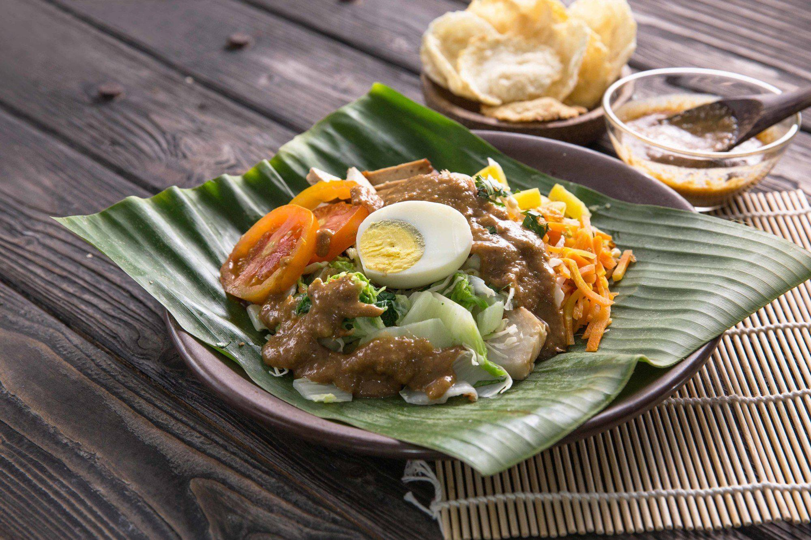

Gado-Gado Recipes

About Gado-Gado
Gado-Gado is a typical Indonesian salad consisting of blanched or steamed vegetables, tofu, tempeh, and boiled eggs, all smothered in a flavorful peanut sauce.
Main Ingredients
- 200 grams potatoes, boiled and diced
- 150 grams long beans, cut and blanched/boiled
- 100 grams bean sprouts, briefly blanched
- 2 boiled eggs, halved
- 100 grams tofu, fried and diced
- 100 grams tempeh, fried and diced
- 100 grams cabbage, thinly sliced and briefly blanched
- 100 gram cucumber, thinly sliced
Peanut Sauce
- 200 grams roasted peanuts, fried and ground until smooth
- 3 cloves garlic
- 2 red chili peppers (or adjust to taste)
- 2 tablespoons palm sugar, shaved
- teaspoon salt
- 200 ml warm water
- 2 tablespoons tamarind juice
How to Make it
- Prepare and dice all the boiled vegetables.
- To make the peanut sauce, grind the garlic and red chilies until smooth. Mix with the ground peanuts.
- TAdd the palm sugar, salt, warm water, and tamarind juice to the peanut mixture. Stir until well combined, and the peanut sauce is ready to use.
- Arrange the boiled vegetables, tofu, tempeh, and eggs on a serving plate.
- Pour a sufficient amount of peanut sauce over the vegetables.
- Gado-Gado is ready to be served. Enjoy with crackers or rice cake (lontong) if desired.